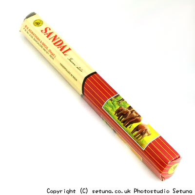

点けずにおいておくと肉桂のような甘酸っぱい匂いがします。
これもまた、サンダルの香りはあまり感じられません。
火を点けてもやっぱりスパイシーな香り。サンダルの香りより肉桂の独特な匂いが強く香ります。
焚き終わった後の方が奥底で流れるサンダルの甘さを感じ取る事が出来るでしょう。
それが細く長く香り続けます。
サンダル系はゆったりくつろぐ感じの物が多い中これは眠気覚ましや元気を出して頑張りたいときに使いたい個性的なサンダル香ですね。
ゴキブリ等の害虫除けとして効果を発揮します。
